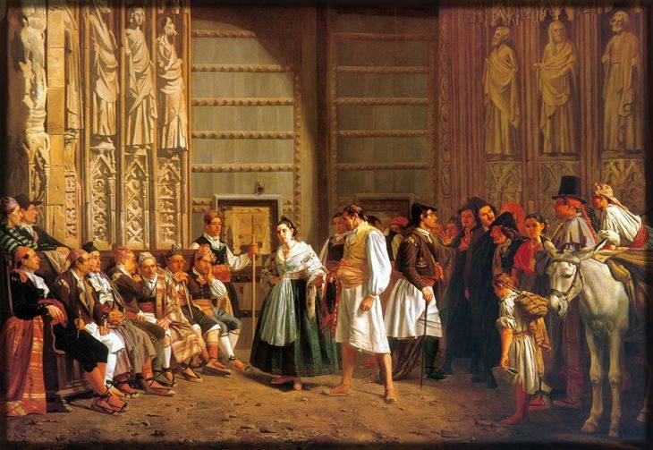

Salari ve de la sal
La paraula ve del llatí salarium, relacionat amb la sal. Allò que als soldats romans se'ls pagava amb sal és una explicació molt repetida, però els historiadors no n'han trobat proves clares.
El que no s'acostuma a explicar de les lleis: d'on vénen les paraules, quines normes del segle XIX continuen vigents i quins judicis van canviar la història.

39 curiositats i anècdotes
La paraula ve del llatí salarium, relacionat amb la sal. Allò que als soldats romans se'ls pagava amb sal és una explicació molt repetida, però els historiadors no n'han trobat proves clares.
«Alcalde» ve de l'àrab al-qadi, el jutge. Durant segles els alcaldes de les viles castellanes sobretot jutjaven plets. «Algutzir» també ve de l'àrab: al-wazir, el ministre.
Saber-ne mésLes dues paraules vénen del llatí testis, testimoni. A Roma un testament era, sobretot, una declaració feta davant de testimonis.
Saber-ne més«Advocat» ve del llatí advocatus, «el cridat» per ajudar algú en un judici. I «notari» ve de notarius, el que prenia notes ràpides amb abreviatures.
Charles Boycott administrava terres a Irlanda. El 1880 els pagesos, farts dels seus desnonaments, van deixar de treballar per a ell i de vendre-li res. El seu cognom es va convertir en verb a mig món.
«Veredicte» ve del llatí vere dictum, «dit amb veritat». «Hipoteca» ve del grec hypothēkē, el que es posa a sota com a garantia. I «quòrum» és llatí: «dels quals».
El Código Civil espanyol és del 1889. Amb moltes reformes, continua regulant els contractes, les herències o la família en bona part d'Espanya. A Catalunya regeix el Codi civil de Catalunya, i l'estatal només s'aplica en allò que aquest no regula.
Saber-ne mésEls judicis penals es continuen tramitant amb la Ley de Enjuiciamiento Criminal del 1882. La seva exposició de motius, del ministre Alonso Martínez, encara se cita per la seva defensa de l'acusat davant l'Estat.
Saber-ne mésLa Ley del Notariado del 1862 continua vigent. I el Código de Comercio del 1885 també, tot i que bona part del seu contingut ha passat a lleis més modernes.
El Tribunal de les Aigües de València es reuneix cada dijous a migdia a la porta dels Apòstols de la catedral per resoldre els conflictes de reg de l'horta. Els judicis són orals, en valencià i sense advocats. La llei el reconeix com a tribunal i la UNESCO el va declarar patrimoni immaterial el 2009.
Les Siete Partidas d'Alfons X, del segle XIII, encara apareixen en sentències de tribunals dels Estats Units, en plets sobre terres i aigües de territoris que van ser espanyols, com Texas, Califòrnia o Louisiana.
Saber-ne mésLa de Cadis del 1812 tenia 384 articles, la més llarga de la història d'Espanya. La del 1978 en té 169. I la del 1856 no va arribar mai a entrar en vigor: se la coneix com la «non nata», la no nascuda.
Saber-ne mésEl Boletín Oficial del Estado descendeix de la Gazeta, que es va començar a publicar el 1661. Es diu BOE des del 1936. Des del 2009 l'única edició oficial és l'electrònica: ja no s'imprimeix en paper.
Saber-ne mésSi una llei no diu una altra cosa, entra en vigor als 20 dies de publicar-se completa al butlletí oficial. És la vacatio legis, el temps perquè tothom la pugui conèixer.
Ho diu l'article 6 del Código Civil: «La ignorancia de las leyes no excusa de su cumplimiento». És una de les raons per les quals existeix Leypedia.
Fins al novembre del 1978 la majoria d'edat a Espanya era als 21 anys. Es va rebaixar als 18 just abans del referèndum de la Constitució, que la fixa en aquesta edat a l'article 12.
Saber-ne mésLa Constitució del 1978 va abolir la pena de mort, però va deixar una excepció per a temps de guerra en les lleis militars. Aquella excepció va desaparèixer el 1995.
Saber-ne mésLa llista oficial de presidents de la Generalitat comença el 1359 amb Berenguer de Cruïlles, president de la Diputació del General. Per això els presidents actuals porten un número tan alt.
Saber-ne mésLa Llei 1/1980 del Parlament de Catalunya va ser la que va declarar l'11 de setembre Festa Nacional de Catalunya. Va ser la primera llei aprovada després de recuperar l'autogovern.
Saber-ne mésLa rabassa morta era un contracte agrari català: el propietari cedia la terra per plantar vinya i el contracte durava mentre visquessin els ceps. Quan la fil·loxera els va matar a finals del segle XIX, va esclatar un gran conflicte al camp.
Saber-ne mésLa Llei de contractes de conreu del 1934 va ser anul·lada pel Tribunal de Garanties Constitucionals de la República. El Parlament de Catalunya la va tornar a aprovar, gairebé igual, pocs dies després.
Saber-ne mésA Catalunya la llegítima dels fills és només una quarta part de l'herència, molt menys que al Código Civil estatal. Ve d'una tradició que la Nova Planta no va tocar perquè va respectar el dret civil català.
Saber-ne mésEl Parlament va prohibir les curses de braus a Catalunya el 2010, a partir d'una iniciativa legislativa popular. El 2016 el Tribunal Constitucional va anul·lar la prohibició per envair competències de l'Estat.
Saber-ne mésA les eleccions del 1931 les dones podien ser elegides, però no votar. Clara Campoamor, Victoria Kent i Margarita Nelken van ser diputades. Les dones van votar per primera vegada en unes generals el novembre del 1933.
Saber-ne mésFins al 1975 una dona casada necessitava el permís del seu marit per treballar, obrir un compte al banc o vendre els seus propis béns. Ho va suprimir la Ley 14/1975, gràcies en bona part a les juristes de María Telo.
Saber-ne mésFins al 1978 l'adulteri era delicte, i la llei el castigava de manera més dura per a les dones que per als homes. Aquell any es va despenalitzar, juntament amb la venda d'anticonceptius.
Saber-ne mésUna llei del 1966 va obrir a les dones la carrera judicial, però la primera jutgessa, Josefina Triguero, no va prendre possessió fins al 1977.
Al segle XIX les dones no es podien matricular a la universitat. Concepción Arenal va assistir com a oient a classes de Dret a Madrid vestida d'home.
Saber-ne mésEl 1953 l'advocada Mercedes Formica va publicar a l'ABC «El domicilio conyugal», sobre una dona apunyalada pel seu marit que, segons la llei, no es podia quedar a casa seva. La reforma del 1958 es va conèixer com «la reformica».
Saber-ne mésEl 1913 dos homes van ser condemnats per matar un pastor desaparegut a Osa de la Vega (Conca). Havien confessat sota tortures. El 1926 el «mort» va reaparèixer viu. El Tribunal Suprem va anul·lar la condemna i el cas es va convertir en el gran exemple d'error judicial a Espanya.
Els judicis amb jurat popular van existir a Espanya del 1888 al 1923 i durant la República. Van tornar amb la Ley del Jurado del 1995, que avui s'aplica a delictes com l'homicidi o la malversació.
El 1283 Pere el Gran i Carles d'Anjou van acordar decidir la guerra de Sicília en un combat de cent cavallers per bàndol a Bordeus. Cap dels dos no es va trobar amb l'altre al camp, i cadascun va acusar l'altre de covardia.
Saber-ne mésLa paraula «genocidi» la va inventar el jurista Raphael Lemkin el 1944. Als judicis de Nuremberg es va fer servir en l'acusació, però el delicte de genocidi no es va definir en un tractat fins a la Convenció de l'ONU del 1948.
Saber-ne mésLa tortura era un mitjà legal per obtenir confessions. Les Corts de Cadis la van abolir el 1811, tot i que Ferran VII va restaurar part del vell sistema en tornar el 1814.
Saber-ne mésEspanya i Portugal van signar el tractat d'adhesió a la Comunitat Econòmica Europea el 12 de juny de 1985 i hi van entrar l'1 de gener de 1986. Des de llavors, bona part de les nostres lleis neixen a Brussel·les.
Saber-ne mésCada llei europea es publica en les 24 llengües oficials de la Unió, i totes les versions valen el mateix. El català no és llengua oficial de la UE, tot i que des del 2005 es pot escriure en català a algunes institucions i rebre'n resposta.
Saber-ne mésDes del 15 de juny de 2017 fer servir el mòbil en un altre país de la Unió costa el mateix que a casa. Ho va decidir un reglament europeu, que s'aplica directament sense necessitat de llei espanyola.
Des del 1991 el 112 és el número d'emergències comú a la Unió Europea: és gratuït i funciona des de qualsevol telèfon, també sense saldo.
Les normes europees obliguen a demanar permís abans de desar galetes que no són imprescindibles, i el Reglament General de Protecció de Dades s'aplica des del 25 de maig de 2018. Leypedia no fa servir galetes.
Cada època i cada personatge de l'enciclopèdia té la seva pròpia anècdota. Obrir l'enciclopèdia